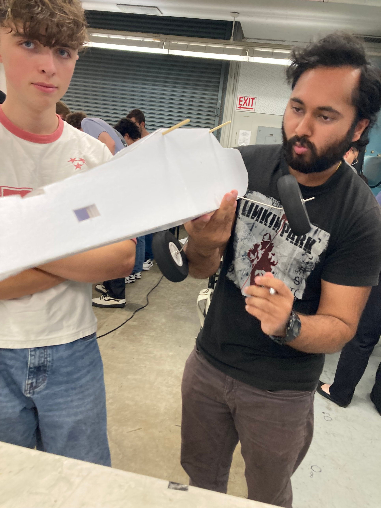
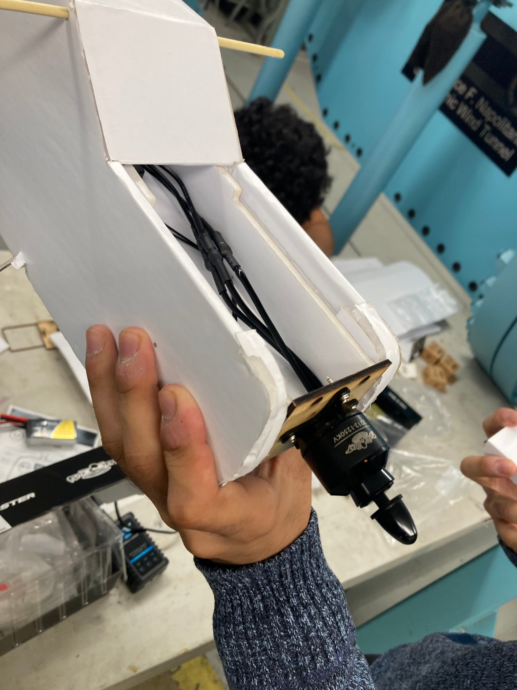
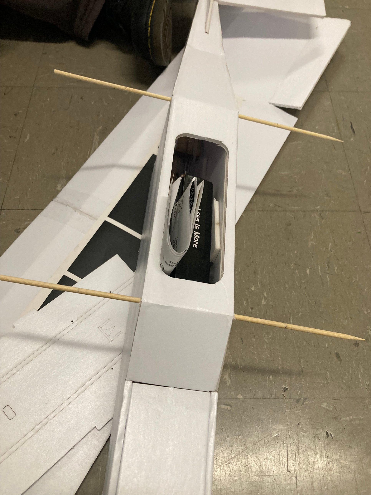
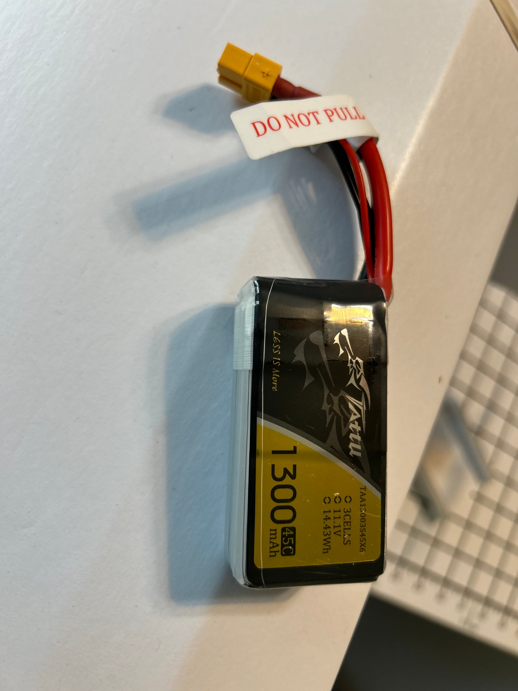
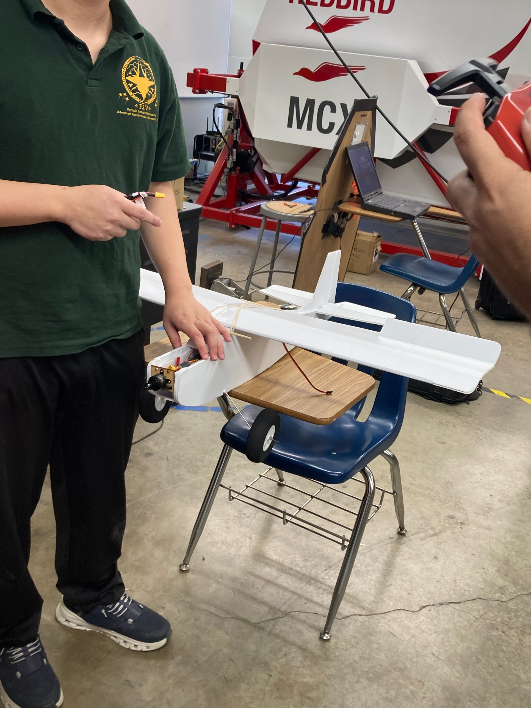

FT Tutor MKR2 Airframe & Flight Mechanics Characterization
Ground thrust-stand calibration and free-flight data reduction for a 1.587 lbf electric fixed-wing trainer.
- Course
- ARO 1011L, Cal Poly Pomona
- Role
- Team Lead (5-Student Team)
- Airframe
- FT Tutor MKR2 Kit (720 g)
- Test Scope
- Thrust Stand + 200 ft Course
At the 65% cruise test setting, bench-inferred thrust (1.009 lbf) exceeded power-derived drag (0.908 lbf) by 0.101 lbf (11.1% residual). Drag above 70% throttle to observe LiPo voltage sag down to 7.50 V.

This lab project combined hands-on airframe fabrication with experimental flight-mechanics analysis. As team lead for a five-student group, I coordinated structural assembly, electronics integration, and test-day roles across two evaluations: a static ground bench calibration of motor thrust and electrical power across throttle steps, and seven timed cruise laps over a measured 200 ft outdoor course. Because onboard air-data sensors were not fitted, in-flight lift and drag were backed out using steady-level-flight equilibrium (L = W and T = D).
Airframe Fabrication & Radio Integration
We divided into two sub-groups working in parallel from the FT Tutor MKR2 reference plans—one building the main wing with its carbon spar, and the other assembling the fuselage pod, tail surfaces, and landing gear—while I managed fit-up and final integration. During transmitter binding inside a crowded lab room, the receiver repeatedly locked onto neighboring teams’ radios until we moved to an isolated corner of the shop. On initial bench power-up, both elevator and rudder channels operated in reverse and were corrected cleanly through transmitter channel-reverse settings.



Propulsion System & Avionics Layout
A nose-mounted brushless motor and propeller bolted to a plywood firewall drew power from a 3-cell LiPo pack (Tattu 1300 mAh, 45C discharge, 11.1 V nominal, 14.43 Wh). Servo and ESC leads routed aft through the wing root into the fuselage bay. Hot-glue bead consistency and re-shimming the plywood motor firewall to eliminate thrust-line offset were the primary mechanical adjustments required during final assembly.




Reference Wing Geometry & Mass
To reduce flight velocities to non-dimensional aerodynamic coefficients, we measured a wingspan of b = 41.5 in (3.458 ft) and constant chord c = 8.5 in (0.708 ft), giving a reference planform area S = (b/2)·(croot + ctip) ≈ 2.45 ft² and aspect ratio AR = b²/S ≈ 4.88. Pre-flight aircraft mass measured 720 g (1.587 lbf).
Static Thrust & Power Bench Calibration
Prior to flight, we mounted the completed airplane on a REDBIRD MCX thrust stand and stepped throttle in 25% increments while recording static thrust, DC bus voltage, and motor current. Shaft power was estimated from electrical power (Pelec = VDC·Imotor) using an assumed propeller efficiency of η = 0.85.
| Throttle | Thrust (lbf) | VDC (V) | Imotor (A) | Pelec (W) | Pshaft (W) |
|---|---|---|---|---|---|
| 25% | 0.287 | 9.25 | 4.00 | 37.00 | 31.45 |
| 50% | 0.606 | 9.71 | 8.50 | 82.50 | 70.13 |
| 75% | 1.157 | 7.50 | 14.00 | 105.00 | 89.25 |
| 100% | 1.984 | 7.50 | 18.00 | 135.00 | 114.75 |
Static thrust scaled nearly linearly with power up to ~80 W before rising more steeply at 75%–100% throttle. That inflection coincides with a bus voltage drop from 9.71 V down to 7.50 V under higher current draw, reflecting LiPo internal-resistance voltage sag rather than an aerodynamic change at the propeller.


200 ft Free-Flight Course & Aerodynamic Reduction
Field testing used two range cones spaced 200 ft apart with dedicated team roles for pilot, stopwatch timer, far-cone line observer, data recorder, and videographer. Following a hand launch, the pilot flew seven steady cruise passes at roughly 65% throttle, averaging Vavg = 26.652 ft/s across an average pass time of 7.504 s.
Applying L = W directly sets cruise lift equal to aircraft weight, while dividing interpolated shaft power by cruise velocity (D = Pshaft/Vavg) yields drag. Dividing by local dynamic pressure (½ρVavg²S) produces the non-dimensional cruise coefficients below.
| Aircraft Weight, W | 1.587 lbf |
|---|---|
| Bench-Inferred Cruise Thrust, T | 1.009 lbf |
| Power-Derived Drag, D | 0.908 lbf |
| Average Propulsive Power | ≈ 90 W |
| Cruise Lift Coefficient, CL | 0.865 |
| Cruise Drag Coefficient, CD | 0.449 |
| Lift-to-Drag Ratio, L/D | 1.93 |
| Max Static Thrust-to-Weight, Tmax/W | 1.250 |
Bench-inferred thrust exceeded calculated drag by 0.101 lbf—an 11.1% residual against the lab’s ±10% steady-flight tolerance band—indicating mild unmodeled climb or longitudinal acceleration during the timed passes. The resulting L/D of 1.93 is modest compared to high-aspect-ratio composite airframes, but aligns well with a thick-airfoil foam trainer operating at low Reynolds numbers.
Experimental Uncertainty & Next-Iteration Improvements
Key error contributors included manual stopwatch reaction-time scatter (±0.1–0.2 s per pass), local wind gusts relative to ground speed, lap-to-lap altitude variance, assuming a constant η = 0.85 propeller efficiency, and minor airframe build asymmetries from hot-glue fillets and horizontal stabilizer seating. Flying reciprocal upwind/downwind passes, logging airspeed/RPM onboard, and calibrating static thrust at loaded flight bus voltage would tighten experimental closure on a repeat test. Following data collection, the foam airframe was retired and its electronics were reclaimed for subsequent builds.
- Foam Airframe Fabrication
- RC Avionics & ESC Integration
- Static Thrust Stand Calibration
- Flight-Test Data Reduction
- CL / CD & L/D Analysis
- Team Leadership